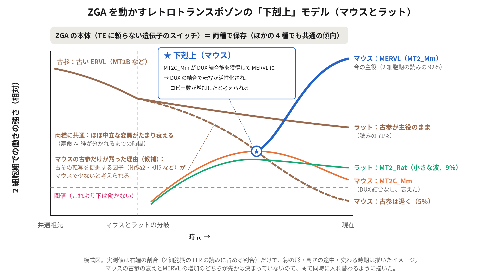

なぜ生物種によって、ZGA を動かすレトロトランスポゾンは保存されていないのか
受精卵が最初に自分の遺伝子を使い始める ZGA（接合子ゲノム活性化）は、哺乳類で広く保存されています。ところが、その ZGA を動かすレトロトランスポゾンは、種ごとにばらばらです。マウスとラットの公開データを再解析して、この食い違いを下剋上進化仮説（北里大学・伊藤研、Sry の進化）から考えました。
ZGA を動かす「座」は保存され、そこに座るレトロトランスポゾンが、種ごとに下剋上で入れ替わるから。
- 座は保存：ZGA の本体（レトロトランスポゾンに頼らない遺伝子のスイッチ）は哺乳類で共通。
- 古参は衰える：レトロトランスポゾンのコピーは変異がたまって衰え、働ける期間は種が分かれるまでの時間くらい。マウスでは、古参を動かす転写因子 Nr5a2 なども少ない。
- 新参が座を奪う：マウスでは、MT2C_Mm の家系が DUX の結合配列を得て MERVL になり、一気に増えて主役になった。
- その種に合ったスイッチが勝つ：マウスの MERVL は DUX 型、ラットの新参は Nr5a2 型。どちらも、その種の胚に多い因子のスイッチだった。



5 つの段階で答えにたどり着いた
① 座は保存ZGA の本体は保存、主役の TE は種ごとに違う共通の ZGA 遺伝子は 4 種でも上がりやすい（2.4〜4.4 倍）。2 細胞期の主役はマウスが新参 92%、ラットが古参 71%。
② 最初の仮説開いた場所に入りやすいから？ → 支持されない新しく入った MERVL は、2 細胞期に開いた場所を選んでいなかった（ランダムの 1.5 倍、有意差なし）。
③ 古参の衰え古参は変異で衰え、マウスでは動かす因子も少ない同じ古参でもマウスでは転写がラットの約 1/3。配列の壊れ方は同じ。抑制の目印（H3K9me3・H3K27me3）は原因ではなく、活性の目印が少なかった。
④ MERVL の誕生MERVL は MT2C_Mm の家系から生まれ、一気に増えたDUX の結合配列は MERVL の直前で急に現れる（0〜7% → 78% → 98%）。Dux は速く進化し、MERVL は少し弱くても働く。
⑤ スイッチの乗り換え少ない因子のスイッチを捨て、DUX に乗り換えた約 9 塩基の欠失で DUX、次に Nr5a2・ESRRB を失う（92% → 6%）。Nr5a2 は実際に MERVL に結合しない（1%）。コピー機を持つのは MERVL だけ。
データと注意使ったデータ・言葉の定義・この答えの限界公開データの再解析で、関係は相関。図の一覧とダウンロード。
比較
Sry の下剋上と同じところ、違うところ
| 下剋上進化仮説（Sry） | ZGA のレトロトランスポゾン | 判定 |
|---|---|---|
| 決定の座は保存、座る遺伝子は入れ替わる | ZGA の座は保存、座るレトロトランスポゾンは入れ替わる（①） | 合う |
| 最上位の遺伝子は速く進化（Sry は Sox3 の約 14 倍） | Dux はほかのホメオボックス転写因子の約 16 倍（④） | 合う |
| 閾値より上なら機能低下が許される | MERVL は DUX の結合配列を失っても 8 割が働く（④） | 合う |
| ほぼ中立な変異で少しずつ衰える | 変異がたまるほど働かなくなり、寿命は種分化の時間くらい。中立かどうかは調べていない（③） | ほぼ合う |
| 古いものが先に衰え、新しいものを呼ぶ | マウスの古参は配列を変えずに転写が落ちていた（Nr5a2 などの不足が有力）。MERVL の増加とどちらが先かは決められない（③） | 順番は未決 |
| 新しいものは生物の遺伝子から生まれる（Sry は Sox3 から） | 新しいものはレトロトランスポゾン自身の家系から生まれ、自分で増える（④） | 違う |
ZGA のレトロトランスポゾンは、下剋上進化仮説の枠組みにおおむね当てはまります。違いは、新しい主役が生物の遺伝子からではなく、レトロトランスポゾン自身の家系から生まれ、自分で増えて座を奪う点です。また、MERVL はマウスで不要になったわけではありません。転写を減らすと胚は胚盤胞まで育ちません（Sakashita ら 2023）。座る者は取り替えがききますが、座は空けられません。
注意
この答えの限界
- 実験はしていません。公開データの再解析で、示せたのは相関です。
- 種の比較は主にマウスとラットの 2 種です（ZGA 遺伝子とレトロトランスポゾンの顔ぶれは 6 種）。
- 転写因子の差は mRNA の量で比べました。タンパク質の量や実際の結合は見ていません。
- 結合配列は配列パターンとの一致による予測です。
- 若い MERVL はコピーどうしがほぼ同じ配列なので、読みの割り当てがあいまいです。一意に当たった読みだけで数えると消える差は、根拠に使っていません。
詳しくは データと注意。